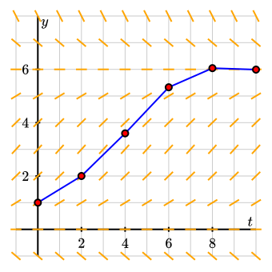
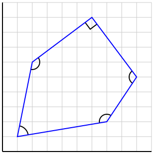

Section 5.4 Mathematical operations
As we’ve seen, PreFigure allows us to define some quantities, often using mathematical operations, and then reuse them. Here we summarize the set of mathematical operations that are possible. PreFigure is written in Python, and authors who are familiar with that language may be able to imagine what is possible.
Subsection 5.4.1 Math operations
PreFigure provides access to Python’s
math module, which means that constants such as pi and e are available, as well as functions such as sin, cos, acos, atan, and atan2. By default, any trigonometric functions use radians, but the functions degrees and radians will convert back and forth.
These functions are available without the
math. prefix so that we can say, for instance, cos(pi/6). See the Python documentation for a full list of functions that are available.
The natural logarithm in Python is given by
log, but PreFigure also allows ln. The base-10 logarithm is log10.
Some operations from discrete math, such as
comb(n,k) for \(n\choose k\text{,}\) are also available.
In addition, if a function
f(x) has been previously defined, then fp(x)=deriv(f,x) will be its derivative. For functions of several variables, say, g(x,y), the gradient is defined by dg(x,y)=grad(g,(x,y)).
There may be times when a diagram contains, say, a point defined as
p=(2,-3) and a two-variable function f(x,y)=x+y. Mathematically, it is natural to evaluate f at the point p. Ordinarily, this would have to be represented as f(p[0],p[1]). However, Python provides the * operator, which does the work of “unpacking” the coordinates so that f(*p) has the same effect. This is demonstrated in Listing 3.7.27.
Subsection 5.4.2 Intersections
The
intersect function is overloaded to handle a variety of cases. While this may seem confusing, the syntax is meant to be natural within specific applications.-
The intersection of two lines
L1andL2, defined by pairs of points is given byintersect( (L1, L2) ). This variant will return a two-dimensional point, as demonstrated in Listing 3.5.8. -
The intersection of two graphs defined by functions
fandgis found byintersect( (f,g), x0)wherex0is a point relatively close to the desired intersection point. This variant of the function returns the value of \(x\) for which \(f(x)=g(x)\text{.}\) One use is illustrated in Listing 3.7.14. -
To find a value of \(x\) where \(f(x)=y_0\text{,}\) use
intersect( (f, y0), x0)wherex0is a point relatively near the solution. -
To find a zero \(f(x)=0\text{,}\) one may use the previous construction
intersect( (f,0), x0)orintersect(f, x0), as demonstrated in Listing 3.7.6. -
More generally, to find the solution of an equation \(f(x)=y\text{,}\) one may use
solve(f, y, x0).
When solving an equation \(f(x)=g(x)\text{,}\) PreFigure looks for a solution within the current bounding box. For this reason, it is usually wise to use the
intersect function within the relevant <coordinates> element. However, an interval can be provided as an optional argument, as in intersect((f,g), x0, (-2,1)), to override this behavior.
Subsection 5.4.3 Vector operations
Vector operations may be defined on previously-defined lists or tuples. For instance, if we define
u=(1,2) and v=(-2,4), we can later say u+v and -3*u. (Behind the scenes, any list or tuple that is defined is interpreted as a numpy array.)
Similarly, a \(2\times2\) matrix may be defined with
A = [[1,2],[2,1]]
and then used to multiply a vector with
A @ v.Some additional operations include:
- length
-
length(u)finds the length of the vectoru. - normalize
-
normalize(u)gives a vector paralle touand having unit length. - dot
-
dot(u, v)finds the dot product ofuandv. - midpoint
-
midpoint(u, v)gives the midpoint of the line segment fromutov. - angle
-
angle(u)finds the angle, in radians, between the vector and the positive \(x\)-axis.
Subsection 5.4.4 List operations
It can be convenient to modify existing lists. For instance, to add an element
a to an existing list, we could say append(list, a). This could be used, for instance, to implement Euler’s method, as shown in Figure 5.4.1. Of course, Subsection 3.8.5 provides an easier way to illustrate Euler’s method, but authors will undoubtedly find uses for the append function.

<diagram dimensions="(300,300)" margins="20">
<coordinates bbox="(-1,-1,10,8)">
<definition>f(t,y) = 0.1*y*(6-y)</definition>
<definition>N=5</definition>
<definition>h=10/N</definition>
<definition>points = [[0,1]]</definition>
<repeat parameter="k=1..N">
<definition>t=points[-1][0]</definition>
<definition>y=points[-1][1]</definition>
<definition>points=append(points, [t+h, y+h*f(t,y)])</definition>
</repeat>
<grid-axes xlabel="t" ylabel="y"/>
<slope-field function="f" stroke="orange"/>
<polygon points="points" stroke="blue"/>
<repeat parameter="k=0..N">
<point p="points[k]"/>
</repeat>
</coordinates>
</diagram>
If
list=(a,b,c), then roll(list) will be the list (b,c,a). This can be useful for visiting each of the vertices in a polygon, for instance, as shown in Figure 5.4.3.

<diagram dimensions="(300,300)" margins="5">
<coordinates bbox="(0,0,10,10)">
<definition>points = ((1,1),(2,6),(6,9),(9,5),(7,2))</definition>
<grid-axes decorations="no"/>
<repeat parameter="k=1..5">
<angle-marker points="points"/>
<definition>points=roll(points)</definition>
</repeat>
<polygon points="points" closed="yes" stroke="blue"/>
</coordinates>
</diagram>
![Runestone Academy logo]()
![MathJax logo]()